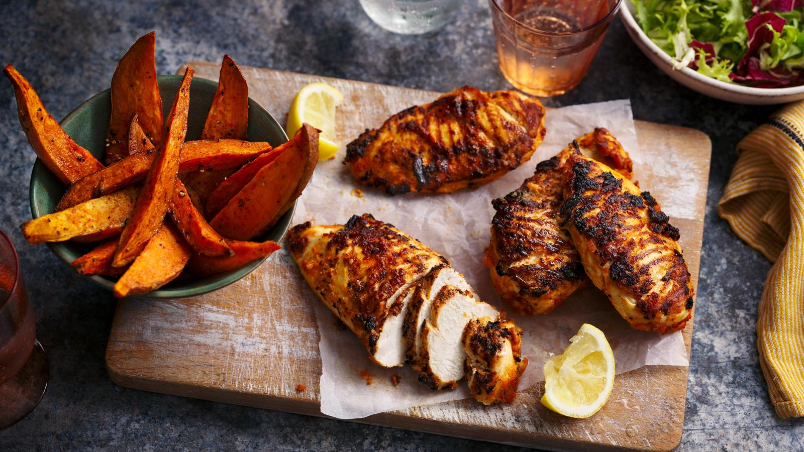

Cajun Chicken

Description
Cajun chicken is a great recipe to prep ahead for busy evenings,
leaving you set up for a super tasty and quick dinner.
Serve with a simple green salad.
Each serving provides 400 kcal, 38g protein,
41g carbohydrates (of which 11g sugars), 8g fat (of which 1.5g saturates),
7g fibre and 1.4g salt.
Ingredients
For the Cajun Spice Mix
- 3 tsp ground cumin
- 4 tsp smoked paprika
- 2 tsp dried thyme
- 2 tsp dried oregano
- 1 tsp red chilli flakes
- 1 tsp garlic salt
- 1 tbsp olive oil
- 1 lemon, finely grated lemon zest and juice.
For the Chicken
- 4 skinless chicken breasts
- 4 sweet potatoes, scrubbed and cut into thick wedges
- 1 tbsp light olive oil
- 1–2 tbsp sweet smoked paprika
- sea salt and freshly ground black pepper
Steps
- For the Cajun spice mix, combine all the ingredients for the spice mix plus a pinch of salt and a generous grinding of black pepper.
Pour the mixture into a sealable storage box big enough to hold the chicken pieces.
- For the chicken, put the chicken breasts on a board and cover with baking paper.
Bash them with a rolling pin until just under 2cm/¾in thick all over. Put the chicken breasts into the spice mix and thoroughly coat the chicken with the mixture.
Refrigerate the chicken breasts for 3–4 hours, or overnight if possible.
- Reheat the oven to 200C/180C Fan/Gas 6 and remove the chicken from the marinade, shaking off any excess.
- Toss the sweet potato wedges in a bowl with the oil and sweet smoked paprika, and season well with sea salt and freshly ground black pepper.
Spread out on a non-stick baking tray and bake for 20–25 minutes, or until golden-brown and tender, turning halfway through.
- Meanwhile, heat a non-stick, ridged griddle pan until hot.
Arrange the chicken breasts on the pan and cook for 15 minutes, turning once or twice until cooked through (or when the juices run clear when a skewer is inserted into the thickest part).
Serve the chicken with the potato wedges.